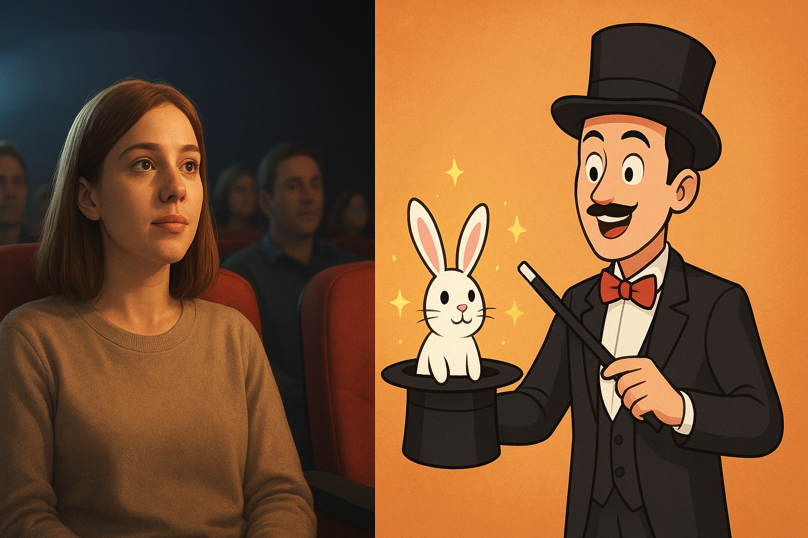
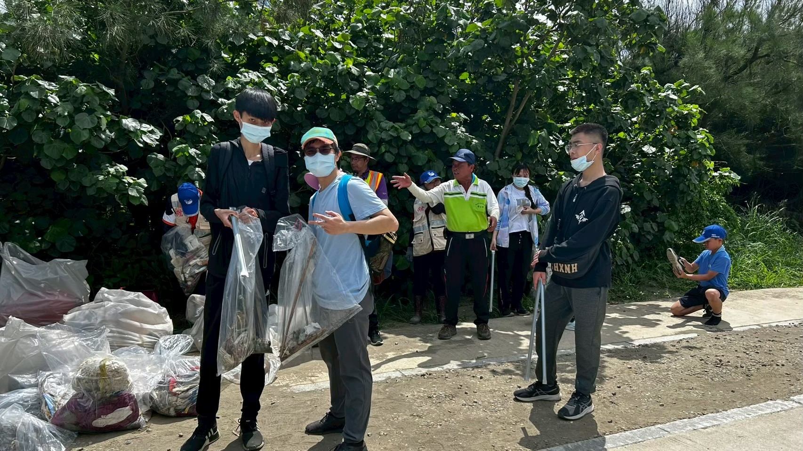
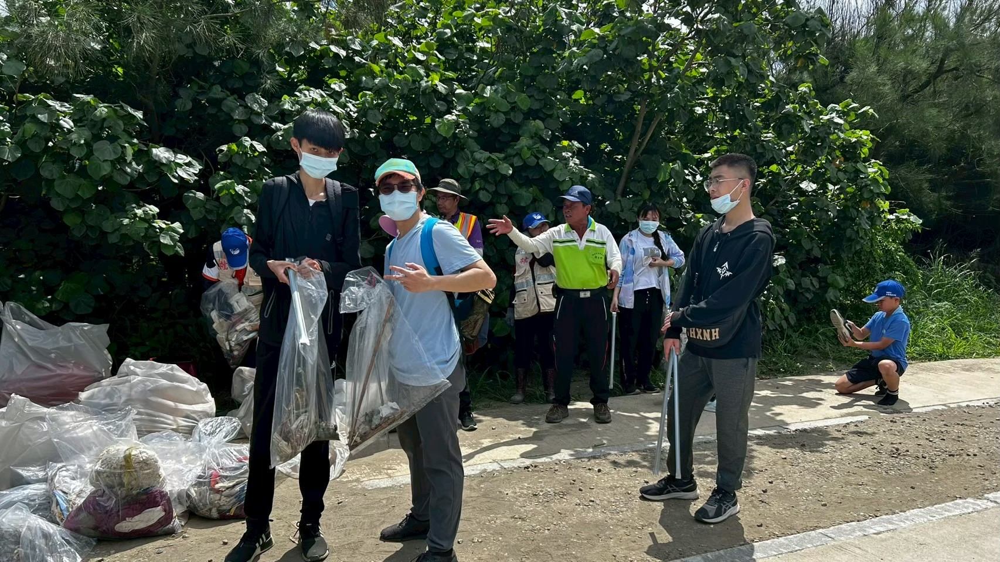
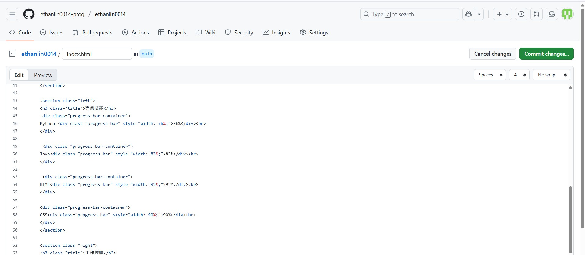
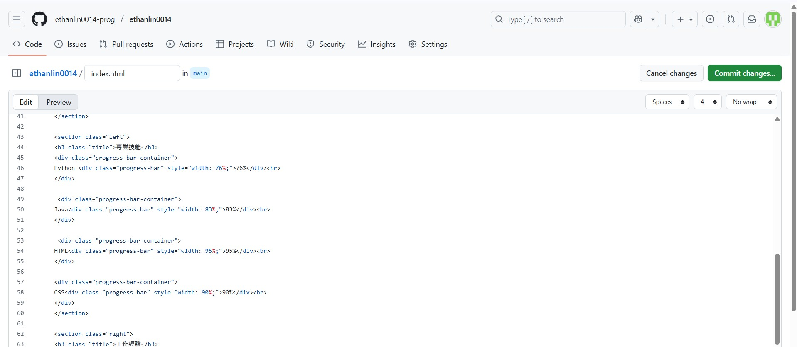

個人資訊

林柏逸
中原大學資訊管理學系
Believe in yourself.
Things will get better..
聯絡資訊
電話：0937963209
LINE：0937963209
郵件：linYi@gmail.com
個人介紹
我是林柏逸，來自桃園，是個I人，個性善良，做事有恆心，堅持到底，努力不輕易放棄，喜歡接受挑戰，嘗試新事物，平時喜歡看影集、追劇。
專業技能
Python Java HTMl CSS工作經驗
在大學期間，我利用假期的期間，嘗試了不同類型的工作。有在餐廳擔任外場工讀，接待各種不一樣客人，學會面對人群，培養自己的耐心與堅毅、也有在系統公司擔任生產助理，幫忙公司整理雜亂的資料，將資料電腦化，做成excel表格，加強自己的文書能力。
在學經驗
社團活動
我曾參加過電影欣賞社、魔術社等休閒性社團，參加電影欣賞社，是我喜歡看影集，社團課常常都會播放不同電影，我覺得看電影是一種紓壓的方式。 參加魔術社，可以學習一些特別有趣的魔術，培養自己的不一樣的技能，除了娛樂自己，也可以娛樂身邊的人。
課程活動
大一下管理學－－＞服務學習觀音草漯沙丘淨灘

在服務學習中，我們這組選擇去草漯沙丘淨灘，在淨灘的過程中，我們撿了很多塑膠垃圾，我們應該愛惜環境，隨身帶走自身的垃圾、做好分類回收，保護大自然，讓生物永續生存。

大二上多媒體設計－－＞架設個人履歷網站

在大學第一次利用上課所學的程式語言HTML、CSS等，設計屬於專屬自己的個人網站。發現架設網站不是一件簡單的事，但做完很有成就感。
